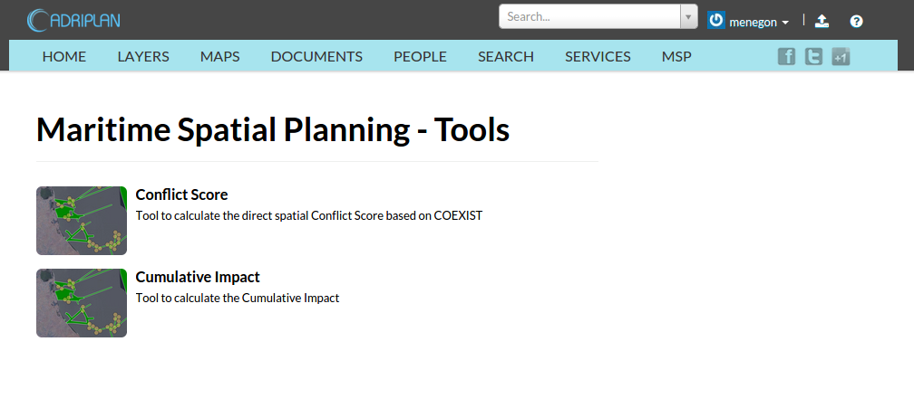
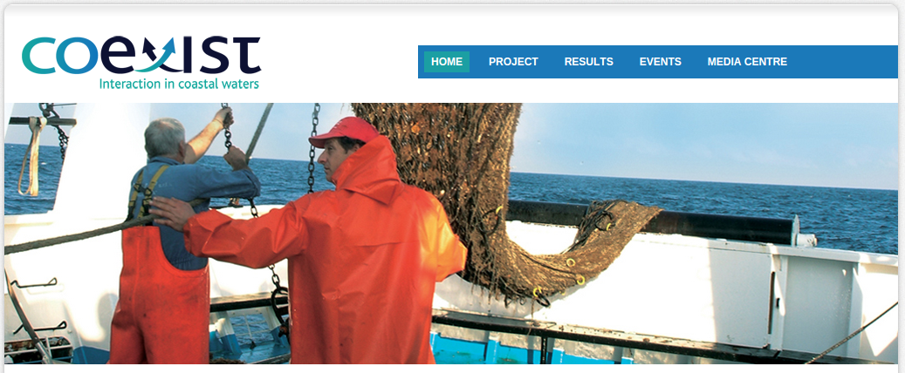
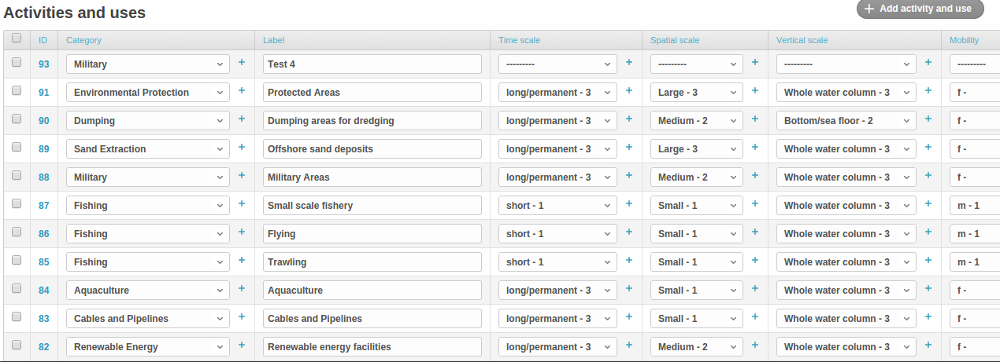
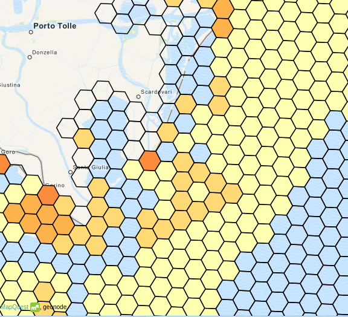
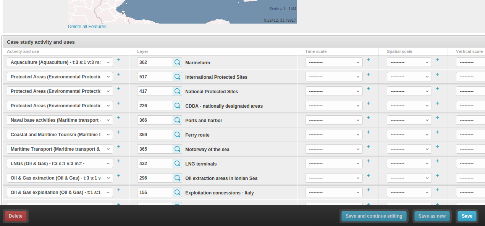
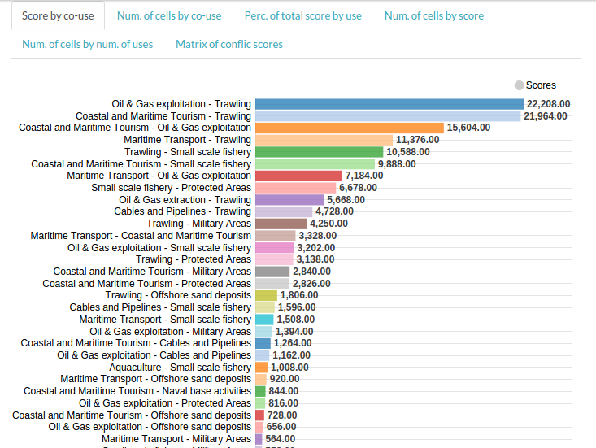
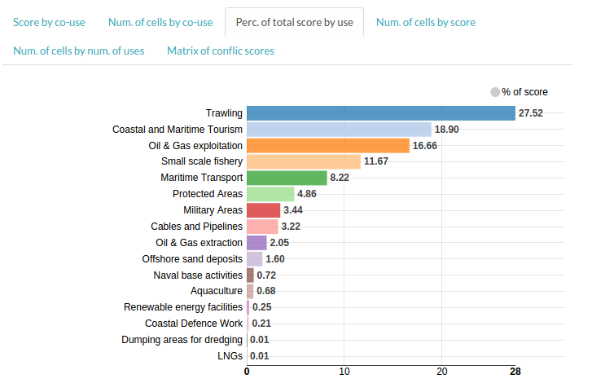
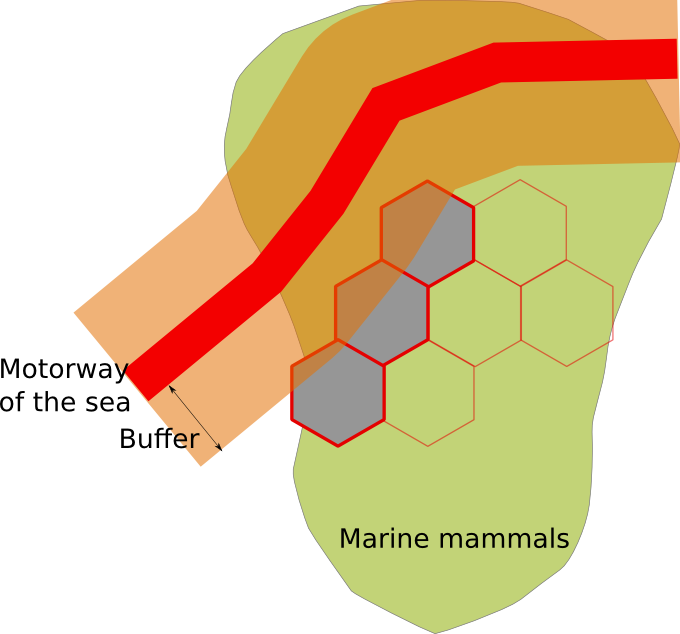

ADRIPLAN project
Data Processing & MSP Tools
Stefano Menegon - CNR-ISMAR
Alessandro Sarretta - CNR-ISMAR
Venice, 23 April 2015
Summary
- Online MSP Tools
- Introduction to offline processing
- Advanced examples (Database, SQL, ...)
New tools supporting MSP activities
Objectives
- carry out collaborative experiments and analyses;
- allow maximum transparency of data and procedures used in the analyses;
- allow temporal reproducibility of results;
- allow periodic repetition of the analyses with updated datasets;
- allow comparison between different simulations;
- allow storing and accessing the results of the analyses.
MSP Tools
Conflict score
tool to quantify the overlapping of uses, calculating the direct spatial conflict score based on COEXIST methodology
 http://www.coexistproject.eu/Cumulative impact
tool to quantify the pressures generated by the uses on the environmental components

MSP Tools - characteristics
- Case Study concept to configure a simulation / run
- The outputs from each run are automatically saved and published through the portal
- The raw data are also available
- The output includes: geographical layers, raw data, base statistics and graphs
Conflict score - characterization
Conflict scores - rules
Rule 1
If Vertical scale of activity1 is different from Vertical scale of activity2 and no one of them interests the whole water column then conflict score is equal to 0
e.g.
activity1 = Pelagic,
activity2 = Benthic
Rule 2
If both activities are “mobile” then conflict score is equal to the minimum of Time scale plus the minimum of spatial scale
Rule 3
If Rule1 and Rule2 cannot be a pplied then the conflict score is equal to the maximum value of Time scale plus the maximum value of spatial scale.
Matrix of conflict scores

Score calculation

- area is divided into regular cells
- score is computed if two or more uses intersect the cell
- total cell score: sum of scores for each combination of uses
score(u1,u2) + score(u1,u3) + score(u1,u4) ....
Conflict score - Case Study

Conflict score - Case Study
Conflict score - results

Score by co-use
Percentage of total score by use
Percentage of total score by use

Output layer - number of uses

Output layer - score

Raw data
- Output layers (es. shp, geojson, kml)
- Uses by cell (CSV)
- Co-uses by cell (CSV)
Cumulative impact - Concepts
identify areas in the marine space where the environmental components are more exposed to anthropogenic pressures
- Activities and uses
- Environmental components
- Pressures
- Sensitivities
Cumulative impact - Sensitivities

Cumulative impact

Cumulative impact
Cumulative impact - Outputs

- Layers
- Raw data (CSV)
Offline processing
- Importing data (Cumulative impact) to QGis
- Visualization
- Group statistics & Contingency tables (i.e. Uses - Env. Components - Scores)
cumulative_impact_outputlayer3.csv
- a row for each grid cell
- columns
- id (unique cell identifier)
- score (total cell score)
- geo (polygon - hexagon)
cumulative_impact_outputlayer3sensitivities.csv
- zero, one or more rows for each grid cell
- columns
- id
- grid_id (reference to cell identifier)
- use/activity
- environmental component
- pressure
- score